Pulse
Elements
This page shows each Pulse component with sample data and the parameters it accepts. The components come from @zumer/pulse and return HTML markup for an Orbit universe or a view. You can run the examples from demo/elements.html.
Rings
A channel's ring sits on the edge of the layer. ring(key, reading, lanes, options) draws one from a RingReading: a kind, a value, and what the kind needs. Thickness is in lanes, one lane being a twelfth of the radius. With controls the ring is also the control.
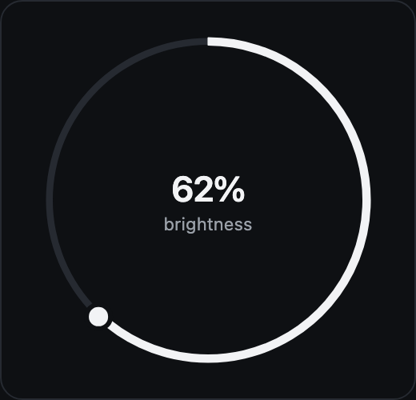
kind: 'p'. Progress from 0 to 1 in v. With a dial (min, max, step, unit, label, value) and controls, a knob sits where the band ends and the ring is dragged, wheeled or stepped with the keys: a slider.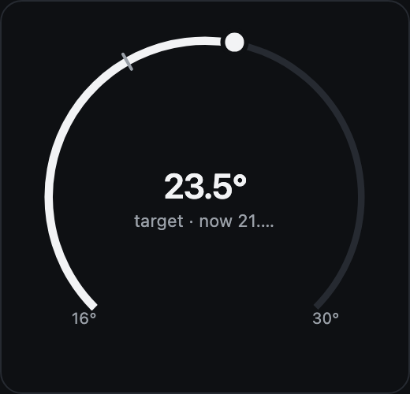
open: true. The same band over 270 degrees, open at the bottom, its ends named. With now, a mark shows where the measurement sits against the target: the eye reads how far it is from its goal.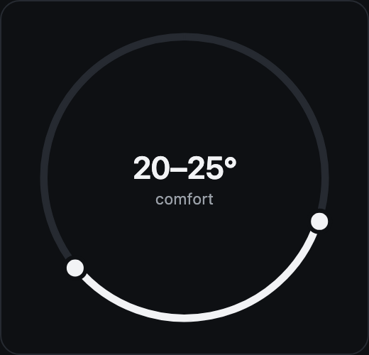
range: { lo, hi }. A band from one fraction to another, with a knob at each end. Each knob is a slider; a drag on the track moves the nearer one.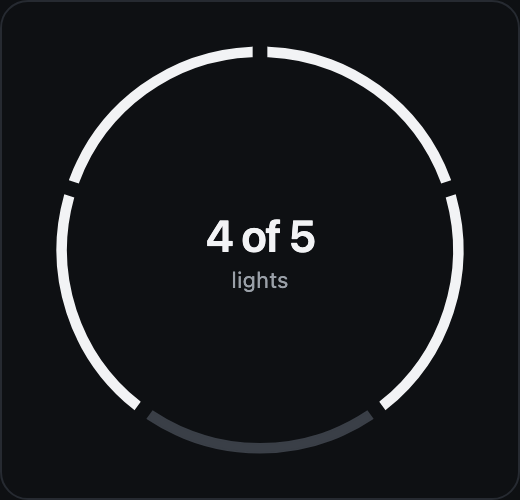
kind: 's'. One segment per entity in segs (label, on, act), two to eight. Each one with an action toggles on a tap.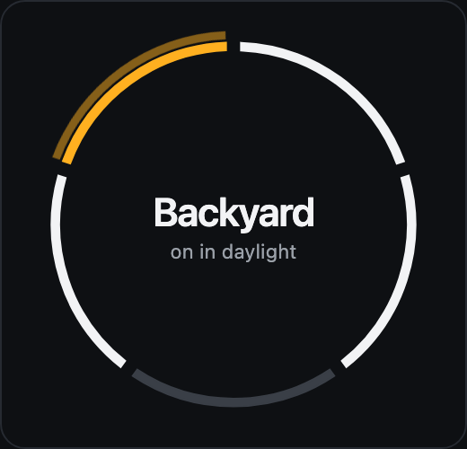
alert: { level, fail: [i] }. Only the segment that fails is painted, in the level's color, and with call the wave comes out of it. The rest stay as they were.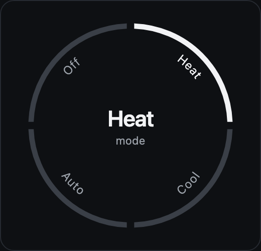
kind: 'c'. Segments of which exactly one is on, their names along the inside of the ring. A thermostat's mode, an alarm's state, a scene. A radio group.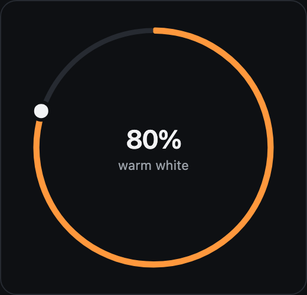
tint colors what is on when nothing is wrong: a light's color. ends: 'rounded' rounds the band's ends and each segment's.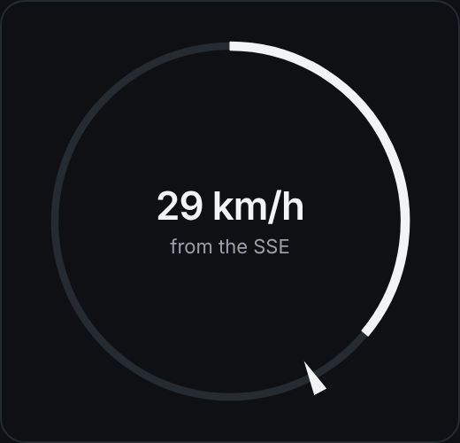
bearing: 152. An arrow on the ring, its point inward, at a direction in degrees clockwise from the top: north, or the bow. Where the wind comes from over its speed, a boat's course over its speed, a heading on an empty ring. It reads on a tile too.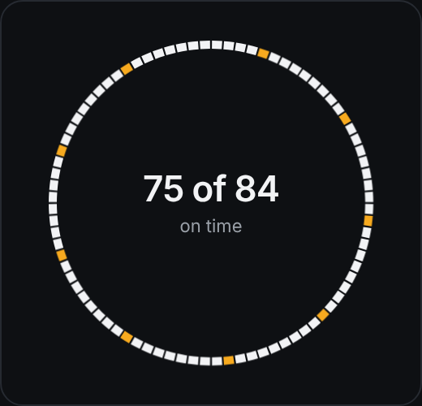
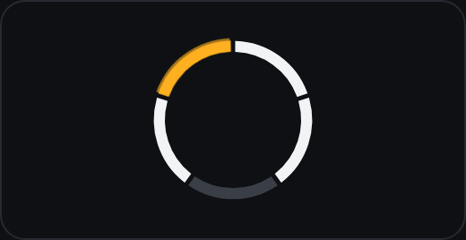
muted it is gray even in an alert.The face
face({ glyph, name, big, label, aria, to?, props?, image?, plots?, extra? }). The center of the front layer: the glyph, the channel's name, the big value and one line. With to the disc is the Zumly trigger of the detail; without it, the disc is only the face. With image a picture fills the disc and the text sits on a scrim. With plots a radar sits behind the text: range rings, the center is here, a dot per thing at its bearing and its range (drones around home, ships around the boat, the day's quakes around you), dim when off, in the alert's color when it calls.
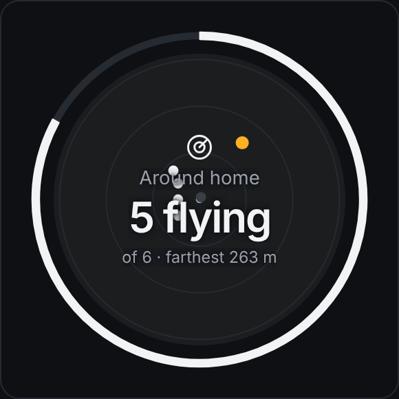
plots: [{ bearing, range, label, on?, tone? }]. A reading's plots become the face's radar; the words stay in front.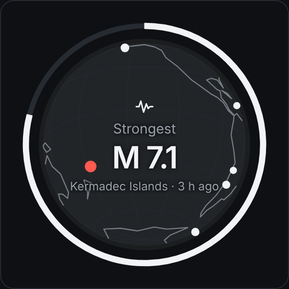
globe: { center?, plots: [{ lat, lon, label, size?, on?, tone? }] }. The disc as the Earth: an orthographic globe turned to a center, Natural Earth's coasts and a faint graticule, a dot per thing at its latitude and longitude, sized by size. The map Pulse has without leaving the circle: flights, ships, the day's quakes.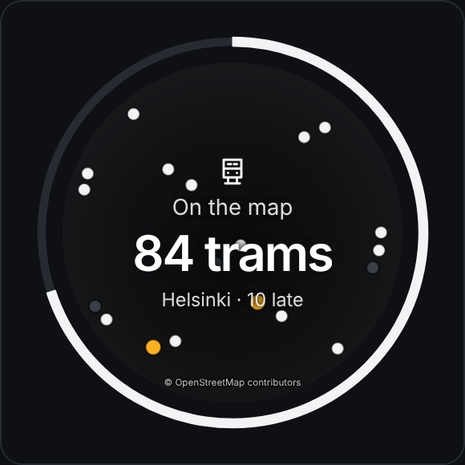
map: { center, zoom, plots, tiles?, attribution? }. The disc as a window on a flat map at a zoom (11 a city, 14 a district, 16 a field): the tiles that cover it, clipped to the circle, a dot per thing, the credit at the bottom. OpenStreetMap's tiles by default, which ask for their credit and light use; any {z}/{x}/{y} server otherwise. For the scale the globe cannot show.The keypad
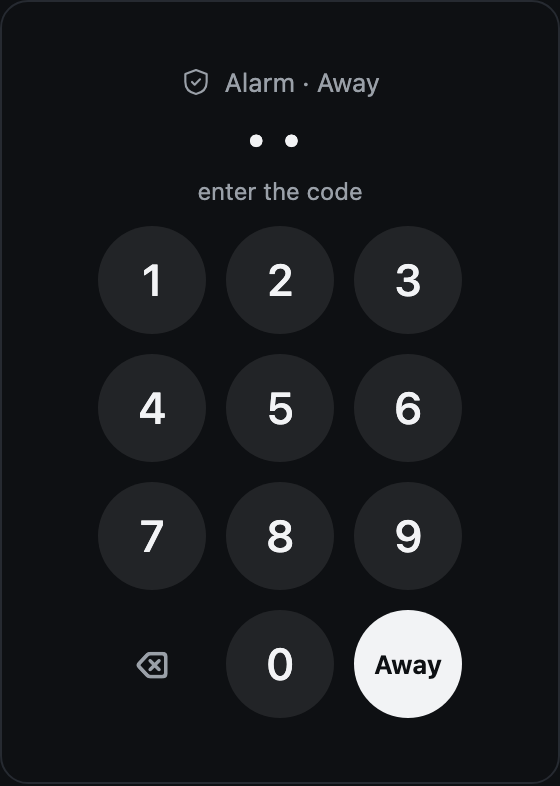
keypad({ name, title, verb, format, value, wrong, glyph, level? }). For an action that asks for a code: what the code is for, the code so far as dots (an input instead, for a text code), the digits, delete, and the key that sends it with the verb, in the alert's color when it answers one. The board puts it over the object and dims the object behind; a refusal paints it wrong until the next key.The object
A system is its channels as layers: each one a nested Orbit universe with data-depth, in a container that moves them back in z and compensates the scale, so the apparent size is the same flat and in 3D. The front layer has the ring with its controls and the face; a layer behind is backLayer({ text, at, grow, stroke, hit, pick }): the arc label just outside its ring and a transparent interactive arc that brings it forward on a tap.
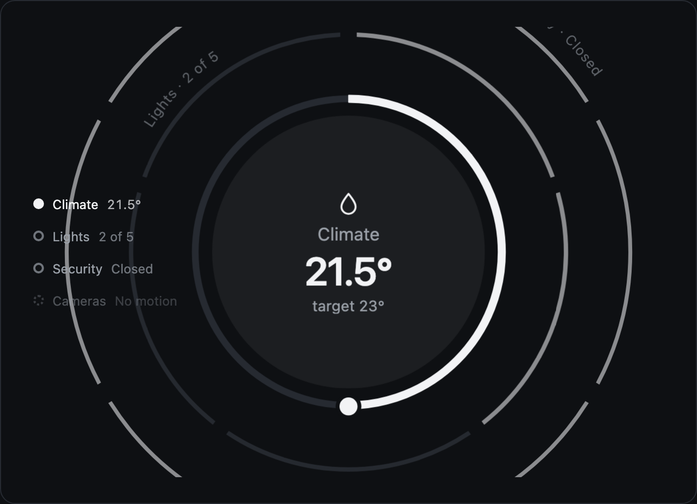
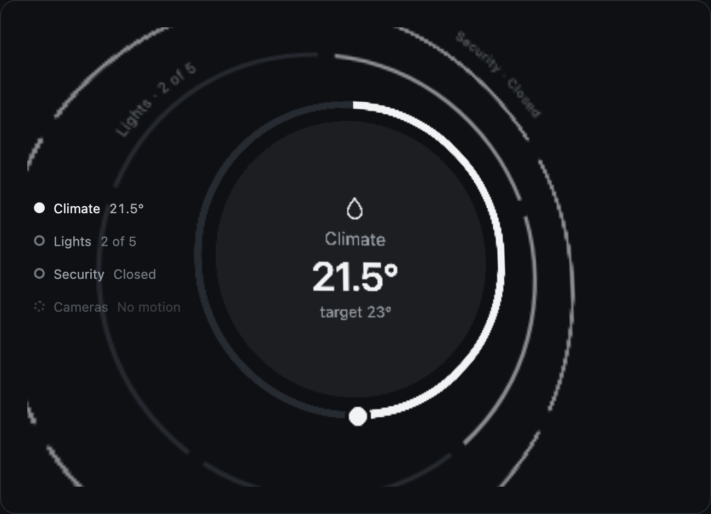
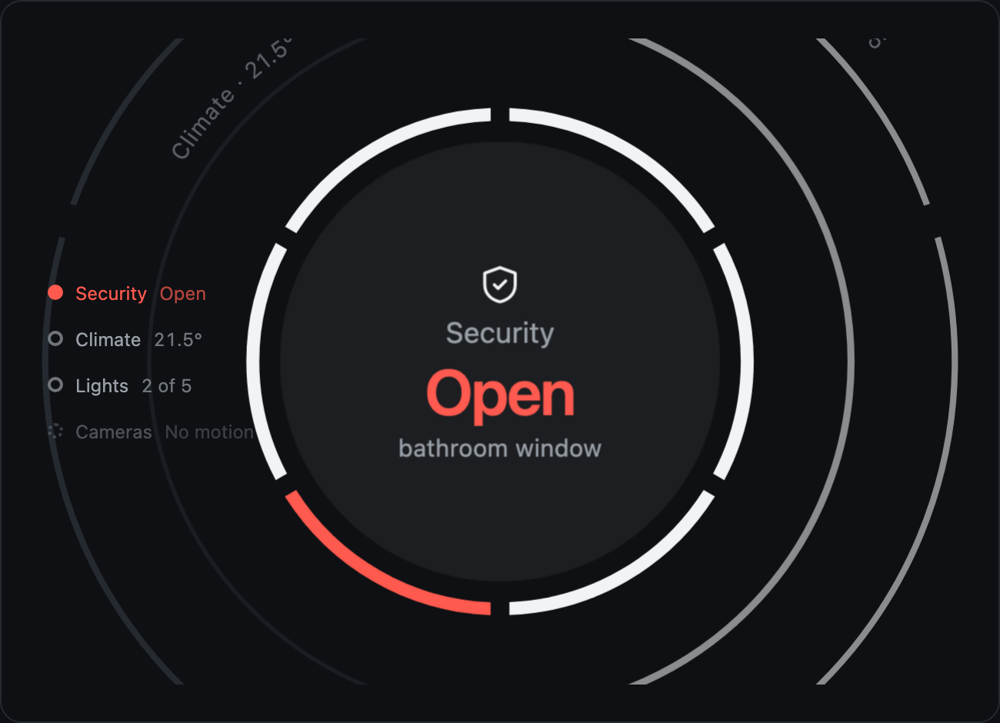
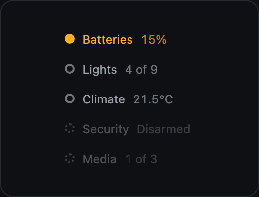
layerIndex(list, attr). Every layer front to back: a dot in its level's color, the front one filled, the ones past the cap hollow. Each a button that brings its layer forward.Under and around the object
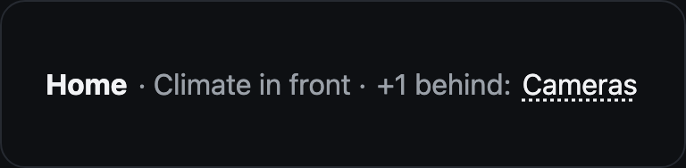
calmStrip(title, frontName, hidden). What is in front and the channels past the cap, each a button.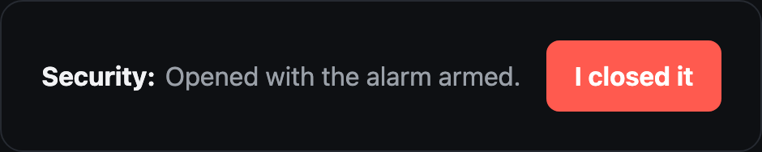
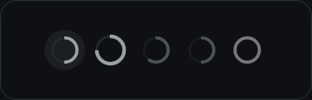
dots(list, currentId). The systems as mini rings under the object on a phone; the one with an alert sends out a wave, at its own size. A tap goes sideways.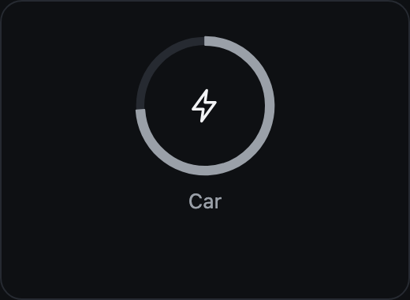
Days and months
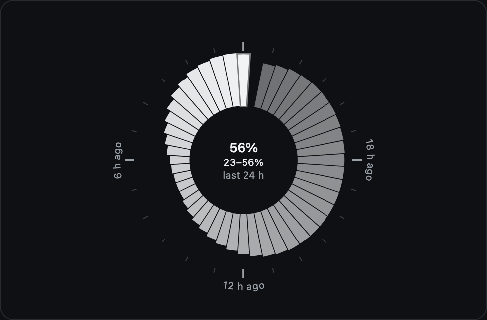
timeRing({ values, label, unit, min, max, marks }). The last 24 hours as sectors on a baseline, one value per hour, the current hour at the top in ink and the older fainter. The center gives the day's range. marks adds the hour ticks and "6 h ago".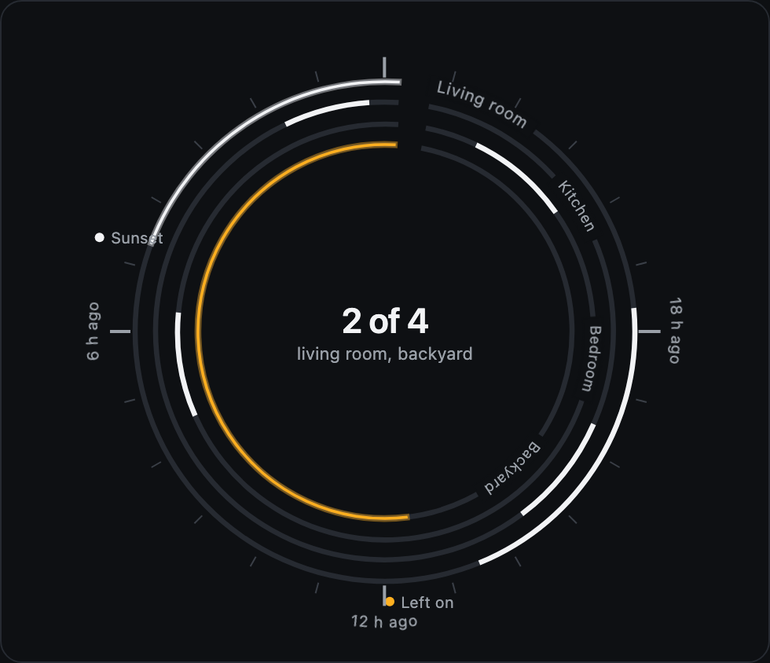
timeline({ hours, tracks, events, big, label, marks, names, aria }). A day per entity as concentric rings, outermost first, up to eight: what was on is drawn, in ink or the alert's color; a ring on right now reaches the top and glows. Events sit outside at their hour.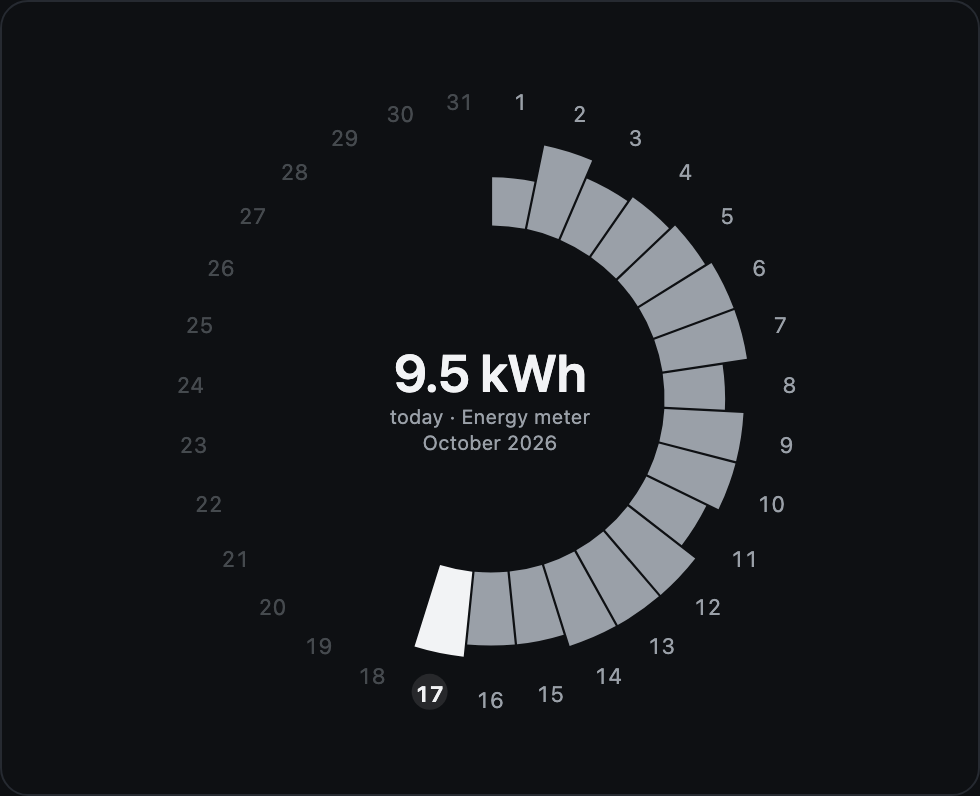
monthRing({ days, today, values, unit, title, big, label, aria }). A calendar: the days around, today marked, the days to come faint, each day's value as a sector inside them.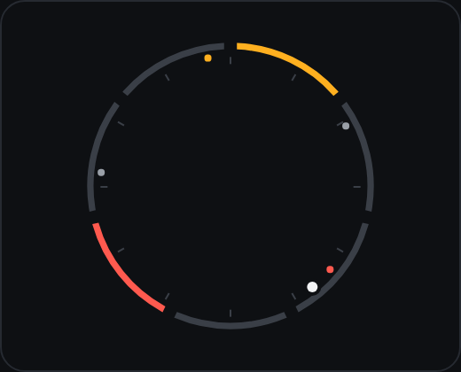
clockRim(marks, now). Superseded by timeWindow on the board. Inside a ring: twelve hour ticks, the latest changes as dots at their minute in their level's color, now as a brighter dot. In the core; the board does not use it for now.Color

colorArcs(key, [h, s], { open, name }). A light's color inside its brightness dial: the hue around, the saturation inside it, each a curved slider with a knob painted with the color it points at. ringCenter washes the center with the color.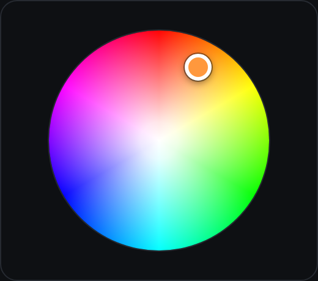
colorWheel([h, s], key, label) + wheelControls. Hue around, saturation outward, a handle that shows the color. Drag, tap or arrows.Lists
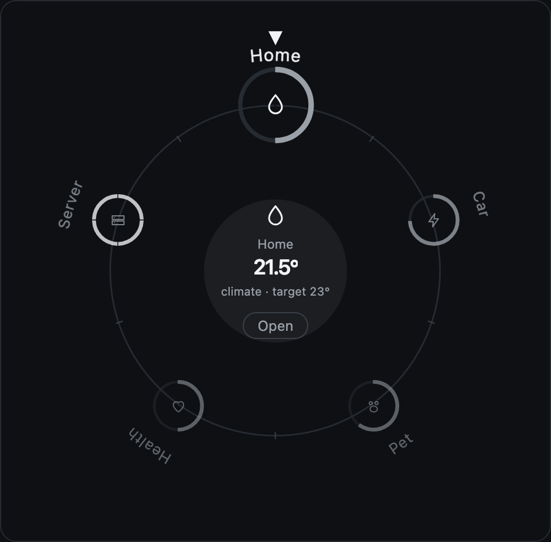
radialList(items, offset) + listControls. Items on a ring, like the lists of a watch, each named along the outside, a tick between them and a notch at the top: the one under the notch shows its face in the center, which opens it; the wheel, a drag or the arrows turn the ring. Up to twelve share the circle; past that, a window of them.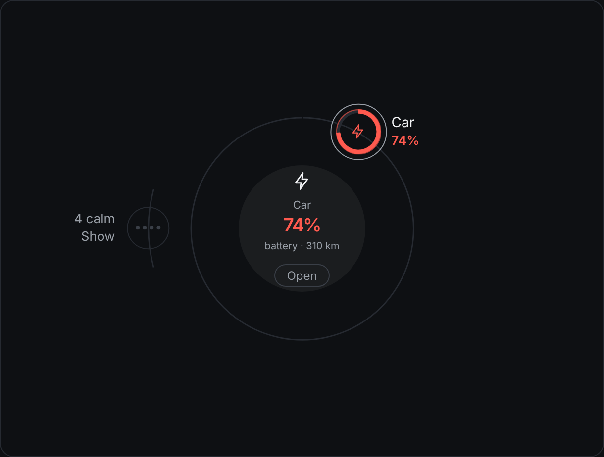
queueRings(items, { focus, open }). The systems as a queue on two rings: what calls inside, by urgency, clockwise from the top, each named beside it; what is fine on the left half of the outer ring, folded into one button (data-calm) or each one there. All the same size; the center is listCenter of the one in focus. The host handles data-qitem and data-calm.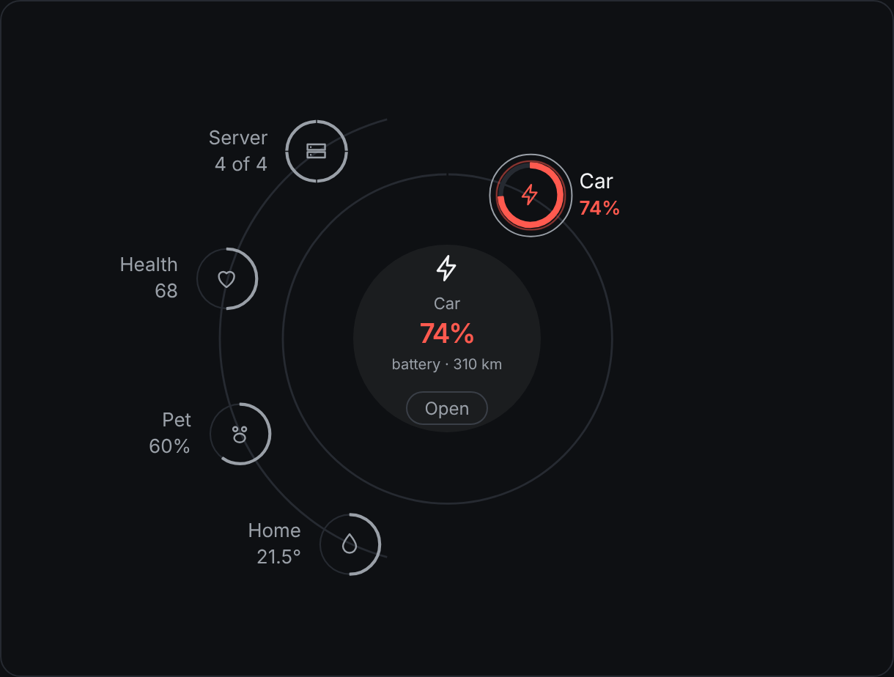
open: true: the calm ones each on the outer ring, quiet.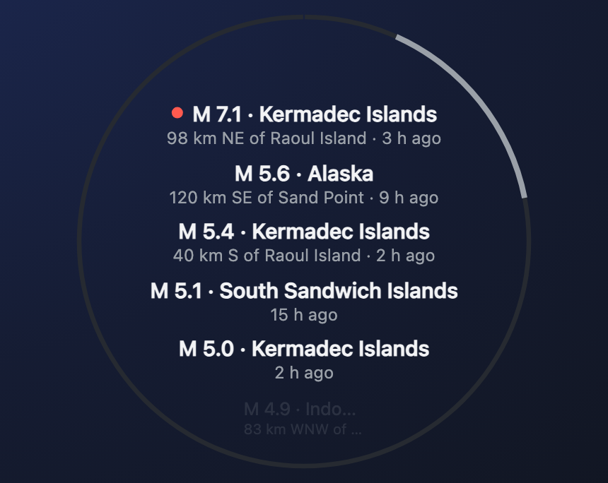
scrollList(items, state, { key, name, rows: true }) + scrollControls. A long list in the disc: five rows whole, each as wide as the circle is at its height, a name and a line under it; a row that calls has the dot of its level, the one chosen of a choice a check, the ones off are dim; the rows passing out shrink and fade at the rim. A curved scrollbar on the ring's right side with a thumb that drags. In a detail it sits beside the reading's map, globe or radar, and a row pointed at lights its dot. Without rows, the items go along the right side of the ring and the middle stays free (the changes).Glyphs
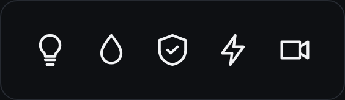
icon(path, size). A glyph is an SVG path on a 24 by 24 grid, one stroke, round caps. The source names the glyph of each channel.Gestures
| Function | What it handles |
|---|---|
dialControls(el, c) | Drag, wheel and keys on every dial inside el, a range's two knobs included; locked after a layer change; swallows the click that follows a drag so Zumly does not zoom; a second finger cancels the drag, so a pinch born on the dial is still Zumly's way back. Returns the cleanup. |
wheelControls(el, c) | The color wheel: drag, tap, arrows. |
listControls(el, c) | Turning the radial list: wheel, drag around the center, arrows; settles on the nearest item. |
scrollControls(el, c) | The scroll list: wheel, a drag along the rows (up and down; around the ring in its other shape), the thumb, arrows, Enter; focus hears the focus move. The arrows stay in the list: Zumly does not read their release as a zoom out. |
zoomOutGestures(app, canvas) | The ways back Zumly does not offer: the trackpad's pinch (a wheel with ctrl) zooms out of a view inside the board, once per pinch; pinching out does nothing. Returns the cleanup. |
parallax(stage, obj, active) | A few degrees of tilt with the pointer, in 3D only, on the compositor. |
Sizes
| Constant | Value |
|---|---|
UNIVERSE, LANE | 240 px; a lane is a twelfth of the radius, 10 px |
SIZE, GROW | Three layers (two on a phone), each 42 percent bigger (24 on a phone) |
STROKE | 6, 3 and 2.5 px, front to back |
STACK_MAX | Five layers at most (three on a phone), the viewer's choice |
LOCK_MS | 800 ms of locked controls after a layer change |
ZOOM | 1.2 calm (1.1 on a phone), 1.35 in an alert; fitFor fills the stage |
PHONE | Narrower than 600 px, decided on load |